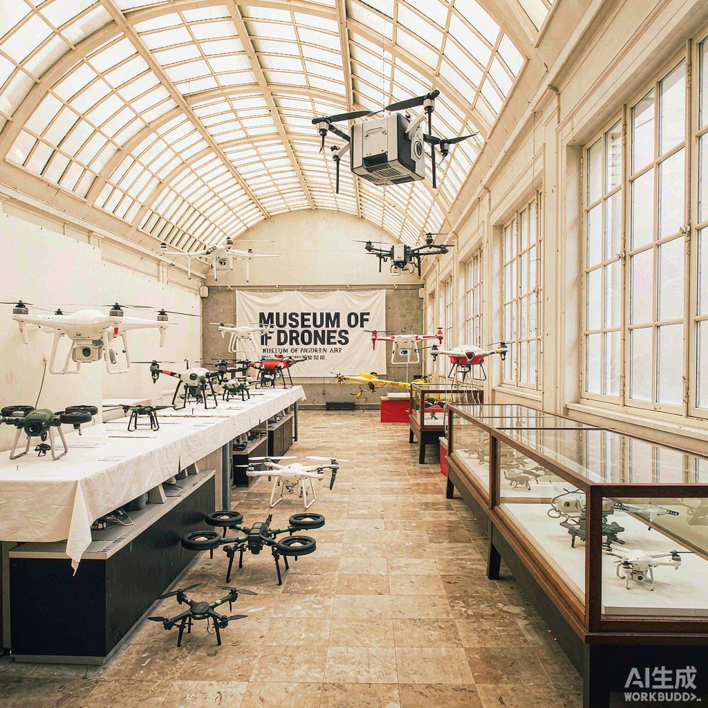
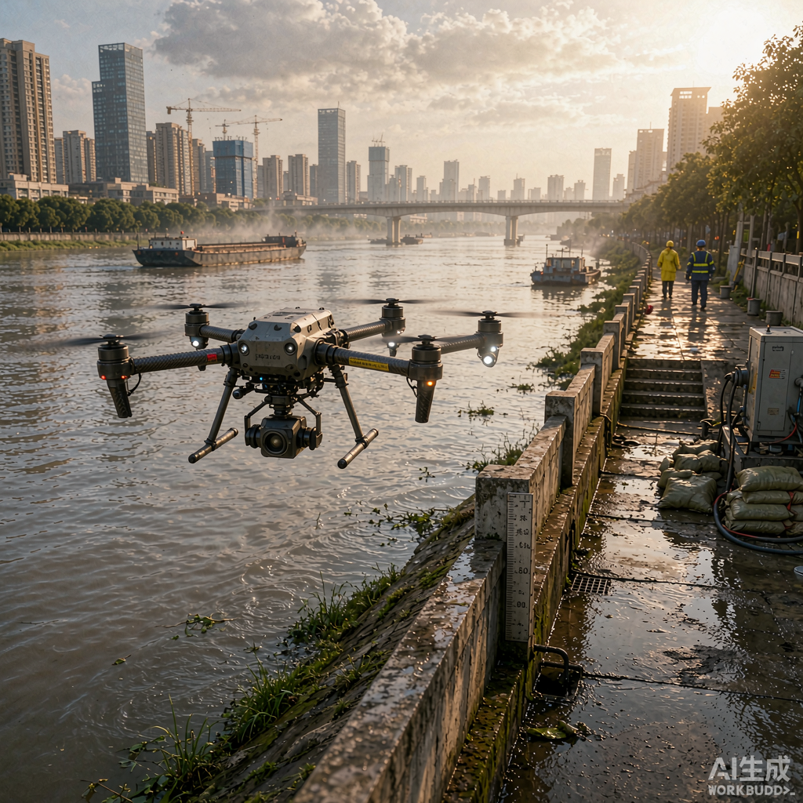
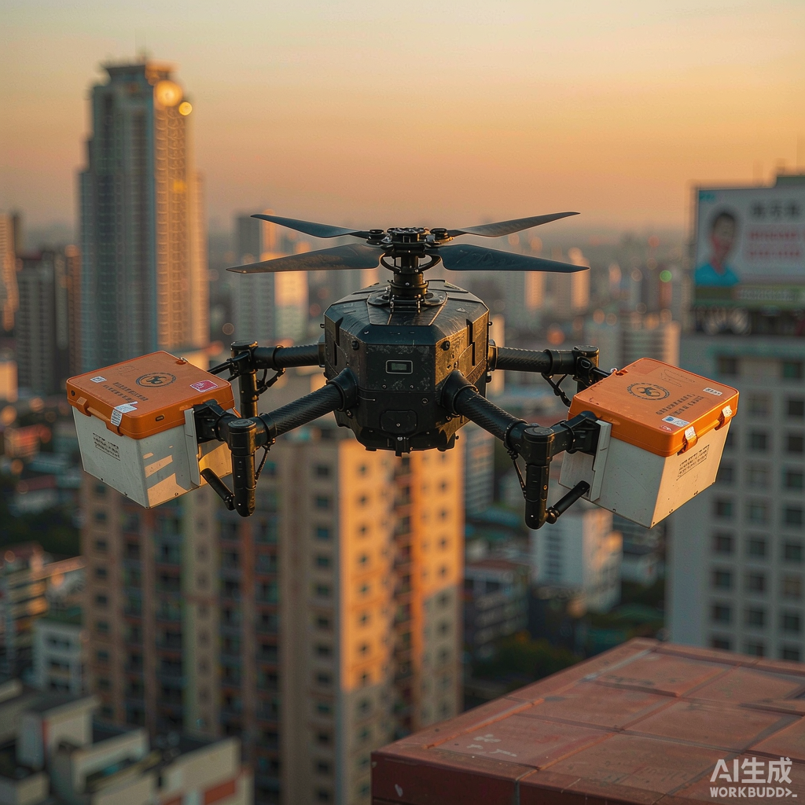

智都科技在低空经济、AI+无人系统领域的进展与公开报道。
智都科技在低空经济与 AI+无人系统领域的进展，受到主流媒体持续关注。以下为部分公开报道的整理与摘录。
腾讯新闻聚焦智都科技无人机表演团队，揭秘「无人机群飞行规划员」这一新职业背后的集群控制技术与创意设计流程。
广西智都科技打造空天地一体化无人机运营平台，已在南宁建成无人机起降点 33 个、未来驿站 2 个、综合服务场站 1 个，140 条航线覆盖商超外卖、景区物资配送与乡镇物流进村。

主流媒体看广西采风团走进智都科技，多类型低空无人系统装备整齐陈列，如同一座「低空智慧装备博物馆」，展现空天地一体化运营平台能力。

青秀区联合智都科技部署无人机巡检系统巡查邕江，依托「低空+AI」实现高空喊话、隐患识别与立体监测，筑牢智慧堤坝。
智都科技在青秀山景区开展低空物流配送与低空巡检试点，将运送时间从最长一小时缩短至约 7 分钟。

「智都低空·飞滴天下」赋能献血公益活动，无人机载医疗物资跨城区飞行，见证「低空+医疗」场景深度融合落地。
以上内容整理自权威媒体公开报道，日期为报道发布时间；如需引用请以原报道为准。
如需采访、获取企业素材或洽谈业务合作，欢迎通过邮箱与智都科技取得联系。